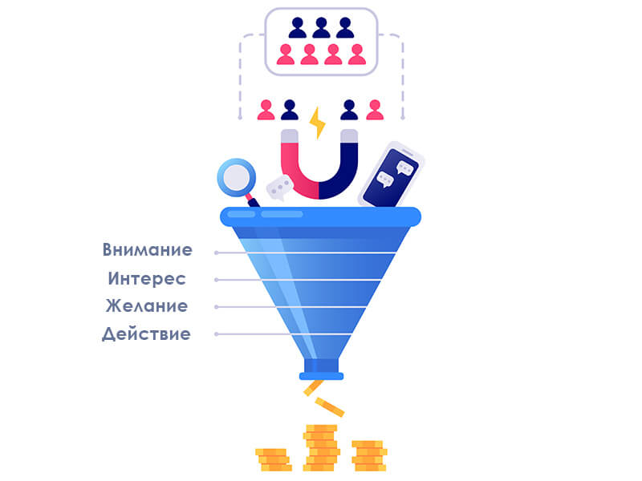

Цель любого бизнеса – получение или увеличение прибыли, а это невозможно без клиентов. Задача маркетологов не только заинтересовать и привлечь лидов, но также не упустить уже «теплых» потребителей. Эффективно реализовать это позволяет воронка продаж. Читайте в статье определение этого термина, советы, о том, как работает воронка продаж, для чего нужна, как ее построить, проанализировать, оптимизировать и многое другое.

Что такое воронка продаж простым языком
Воронка продаж – это путь, который проходят потенциальные клиенты от момента знакомства с компанией до покупки. Он состоит из множества этапов, каждый из которых подогревает интерес к продукту, повышает доверие к бренду и помогает принять решение. Человек трансформируется из «холодного» клиента, который пока ничего не слышал о компании, в «теплого» (заинтересованного), а затем в «горячего», который готов совершить покупку, оплатив счет прямо сейчас.
Каждый этап воронки подталкивает человека к переходу на следующий уровень. Часть потенциальных клиентов идет дальше, но большая часть отсеивается. Это неизбежный процесс. До покупки доходит лишь малая доля «холодной» аудитории.
История возникновения термина
Впервые попытки, изучать, анализировать, подстраиваться под потребности аудитории и ненавязчиво подталкивать ее к нужным действиям были предприняты более 120 лет назад. Эту концепцию предложил американский адвокат Элиас Льюис в 1898 году. Но только почти 30 лет спустя ее совместили с известной ныне моделью AIDA.
Основатель модели Уильям Таунсенд считал, что, взаимодействуя с брендом, потенциальный клиент проходит следующий путь: внимание – интерес – желание – действие. Это позволило в 1924 году создать ту модель воронки продаж, которую мы наблюдаем сегодня, и успешно применять ее во всех сегментах бизнеса в том числе B2B и B2C.
Как работает воронка продаж
Проследить воронку продаж в действии проще всего на примере офлайн-бизнеса. Представьте, что человек идет по улице мимо магазина обуви и получает от промоутера листовку с рекламой этого магазина и приятными ценами. Заинтересовавшись, он заходит посмотреть. Внутри встречает продавец, общается и предлагает помощь. Но клиент сам замечает акцию «Купи 2 пары и получи 3-ю за полцены». Убедившись в хорошем качестве обуви, на следующий день он приходит с семьей, чтобы каждому подобрать пару обуви и сэкономить. Но на этом взаимодействие с магазином не заканчивается. Клиент наверняка при встрече расскажет знакомым о выгодной акции, а возможно, и вернется за новой парой обуви через какое-то время.

На самом деле воронка продаж в интернете работает по такому же принципу. Вместо магазина и продавцов здесь используется сайт с уникальными торговыми предложениями на страницах, которые пользователь посещает по мере повышения заинтересованности, выбирает, и в конце совершает заказ.
Для чего нужна воронка продаж
Основная задача воронки – организовать работу с потенциальными клиентами на всех этапах взаимодействия так, чтобы она не была навязчивой и максимально улучшала продажи. Для чего это нужно бизнесу?
- Выявлять проблемные места в компании. Воронка наглядно показывает, где «хромает» маркетинг. Это может быть неудобный сервис, погрешности в настройке таргетированной рекламы, неправильные скрипты продаж и даже слишком большой поток заявок.
- Отлеживать, как работает каждый менеджер отдела продаж. Подробный анализ продаж, согласно воронке, позволяет показать, на какой стадии каждый менеджер теряет клиентов.
- Находить и исключать лишние этапы воронки, чтобы их осталось меньше. На пути клиента могут быть ходы, которые дают обратный эффект – провоцируют отказ от покупки.
- Разработать и предлагать способы улучшения продаж. Воронка помогает находить ключевые точки, которые могут повысить продажи, если над ними поработать.
- Прогнозировать продажи. Несложно построить план продаж на будущий период, достаточно знать конверсию на каждом уровне воронки. Обычно настроенные рекламные кампании дают стабильный приток клиентов, если только бизнес не сезонный.
Для руководителя компании воронка – один из основных и наиболее эффективных инструментов по управлению продажами.
Этапы воронки продаж: 7 шагов
В разном бизнесе, для разных продуктов и разной целевой аудитории воронки могут отличаться по количеству этапов. Однако основа у всех одна – это классическая модель AIDA. Она состоит из четырех основных ступеней, которые неизменны в любой интерпретации.
AIDA
{kind=link}
- Attention – внимание. Это первая и самая многочисленная ступень. Она включает всех потенциальных клиентов, которые обратили внимание на компанию или продукт. Например, все, кто смотрели на вывеску магазина или рекламный баннер сайта в сети.
- Interest – интерес. На вторую ступень опускаются те, кто не только заметил продукт, но и заинтересовался. Например, зашел в магазин, чтобы выбрать что-то из акционных товаров, или перешел в каталог на сайте, чтобы посмотреть характеристики и цены.
- Desire – желание. Здесь потенциальные клиенты, которые уже присмотрели товар, подошедший им по всем параметрам.
- Action – действие. Это последняя из основных этапов, на которой люди становятся клиентами компании, т. е. оплачивают покупку в ближайшее время.
Но это еще не все. По мере развития бизнеса процесс продаж не ограничивается классической моделью из 4 этапов. Когда клиенты возвращаются за повторными покупками, в воронку добавляется еще 3 этапа.
Повторные продажи
{kind=link}
- Reevaluation – повторная оценка. Имея опыт использования купленного продукта, у людей со временем может возникать желание попробовать альтернативные варианты. Если ваш продукт их устраивает, нет необходимости в поиске чего-то нового.
- Loyalty – лояльность. На этот этап переходят довольные клиенты, которые вернулись и хотят купить еще один товар или услугу.
- Advocacy – адвокация. Здесь клиенты, которые не только очень довольны компанией, продуктом, но и готовы делиться положительными впечатлениями о них: описывать друзьям, оставлять и писать отзывы в соцсетях и т. д.
Ключевой этап воронки
Отдельно остановимся на ключевом этапе воронки (КЭВ). Почему ключевой? Потому что именно этот этап определяет, произойдет сделка или нет. На ключевом этапе потенциальный клиент видит максимум пользы от продукта, понимает, зачем он нужен, и принимает решение о покупке, а менеджер закрывает последние возражения.
В разных сферах КЭВ может быть абсолютно любой. Вот несколько примеров.
- Клининговая компания – личный осмотр объекта менеджером.
- Кухни на заказ – снятие замеров у клиента.
- Продажа одежды – примерка.
Идентифицировать КЭВ можно по значениям конверсии. На ключевом этапе самая большая конверсия в оплату. Когда становится понятно, что какой это этап, рекомендуется плотно прорабатывать его для повышения продаж.
Примеры воронок
Сложность воронки зависит от теплоты аудитории, ее потребности в продукте и уникальности самого продукта. Рассмотрим несколько примеров воронок с разным количеством этапов для разных сегментов бизнеса.
В интернет-магазине
Для теплых клиентов интернет-магазина воронка будет состоять всего из 3-5 шагов. Когда человек ищет конкретный продукт через поисковик, вероятно, он уже готов его купить. Вопрос в том – кому он заплатит деньги. Если пользователь зашел на сайт, воронка должна направить его в нужное место и отправить к покупке.
{kind=link}
В данном случае нужно правильно настроить рекламу и сделать удобную, информативную посадочную страницу с продуктом. Если эти условия будут соблюдены, пользователь просто положит товар в корзину и оплатит покупку.
Воронка продаж для интернет-магазина будет выглядеть следующим образом:
- Реклама.
- Посадочная страница со специальным предложением.
- Отправление товара в корзину.
- Переход на страницу оплаты.
- Оформление заказа.
Такая воронка подходит для товаров массового потребления, например, для продажи одежды, детских товаров, бытовой химии.
В Инстаграм
Пример воронки продаж в Инстаграм рассмотрим на примере аккаунта психолога, который продвигается через эту соцсеть. По результатам предварительного анализа, сильный привлекающий эффект в этом сегменте у контента. Именно он будет использоваться в качестве основы и приносить клики.
{kind=link}
Зная ЦА, нужно заполнить профиль, указать УТП в начале страницы, добавить несколько «цепляющих» предложений, актуальных для аудитории. Затем начинается плотная работа. Запускается реклама аккаунта, проводятся опросы пришедших пользователей, пишутся актуальные материалы для продвижения, затрагивающие «боли» читателей. Хороший эффект дают отзывы довольных клиентов. После прогрева стартует текст, который напрямую подталкивают читателей к активным действиям.
Воронка в данном случае выглядит примерно так:
- Реклама.
- Подписка на профиль с интересной информацией.
- Контент-знакомство.
- Информация с опросом.
- Контент-боль.
- Сторис с положительным отзывом.
- Кейсом удачного решения проблемы.
- Информация с напоминанием о консультациях, графиком приема.
- Текст с описанием услуги, ценами и призывом к действию.
При такой многоуровневой воронке важно постоянно отслеживать конверсию на каждом этапе, контролировать обратную связь и продажи.
В недвижимости
В сфере недвижимости холодной аудитории практически нет. Почти все потенциальные клиенты находятся в поиске (срочном или в перспективе) и готовы рассматривать предложения. Воронка продаж в недвижимости обычно состоит из 3-5 этапов.
{kind=link}
Предположим, человек ищет квартиру в новострое с определенными параметрами. Благодаря хорошо настроенной рекламе компания-застройщик попадает в поле зрения потенциального клиента. Даже если жилье не нужно ему прямо сейчас, жилищный комплекс запомнится, и человек сможет найти его позже, например, в следующем месяце или через полгода.
Далее потенциальный покупатель рассматривает и сравнивает предложения на рынке. На этом этапе важно сразу дать максимум информации, которая поможет решить, стоит ли рассматривать данный ЖК. Здесь играет роль удобство и информативность сайта – именно он будет давать ответы на большинство клиентских вопросов. Для удержания заинтересовавшихся пользователей применяются выгодные спец. предложения, акции, скидки, полезные дополнительные услуги, описать преимущества.
На этапе принятия решения о покупке немаловажную роль играет то, насколько быстро и качественно обрабатываются входящие звонки по телефону, умеет ли менеджер доводить клиентов до заключения договора, а не просто отвечает на вопросы и пытается закрыть сделку. Порой некомпетентность менеджера по продажам может свести на нет все усилия по привлечению клиентов.
В сегменте недвижимости работа не заканчивается оформлением сделки. После приобретения квартиры клиента могут интересовать дополнительные услуги. Их важно не только оказать, но и предлагать время от времени мелкие «плюшки», которые повышают лояльность.
Итак, воронка продаж в недвижимости выглядит так:
- Реклама и осведомленность.
- Рассмотрение и сравнение предложений.
- Принятие решения о покупке.
- Оказание услуг.
- Поддержание лояльности клиента.
Разница между воронками продаж в онлайн и оффлайн-бизнесе
Воронки продаж для оффлайн и онлайн-бизнеса отличаются незначительно. Но разница есть, она заключается в возможности анализировать и прогнозировать ситуацию на рынке в онлайне. Здесь легко настраивается автоматизация воронки что позволяет оценивать ее продуктивность пошагово и делать выводы на будущее.
В оффлайне применяются простейшие маркетинговые принцип и приемы: значения конверсий, САС и т. д. Здесь очень сложно добиться автоматизации воронки и отслеживать эффективность каждого из ее этапов. Как видно, инструмент показывает себя с лучшей стороны именно в интернет-бизнесе.
Виды воронок продаж
Существует много разновидностей воронок продаж, их классифицируют по разным принципам. Вот основные виды:
По принципам визуального представления:
- верхнеуровневая;
- детализированная.
По этапам:
- маркетинговая;
- текущие продажи;
- сервисная;
- дополнительные продажи.
По срезам:
- по новым клиентам;
- по текущим клиентам;
- по каналам продаж;
- по продуктам;
- по целевой аудитории;
- по региону;
- по сотрудникам.
По сложности:
- простые – 2-5 шагов;
- средние – 5-10 шагов;
- сложные – от 10 шагов.
Далее в статье рассмотрим каждый вид воронки подробнее.
По принципам визуализации
Существует всего 2 основных принципа наглядности воронки продаж:
- Верхнеуровневая. Такая воронка включает только основные уровни потенциального клиента (например, вход на сайт – покупка) и наглядно демонстрирует, сколько возможных клиентов отсеиваются и не становятся реальными.
- Детализированная. Напротив, позволяет учесть все до мельчайших действий покупателя. Таких воронок может быть много в бизнесе – для каждого этапа можно привести отдельную подробную карту шагов.
По этапам
Взаимодействие клиента и предпринимателя редко заканчиваются вместе с оплатой покупки. Соответственно, воронки продаж можно разделить на несколько видов по этапам.
{kind=link}
- Маркетинговая воронка – представляет собой этапы первичного интереса аудитории к продукту, проработки клиента на пути к покупке и непосредственно продажи.
- Текущие продажи – такая воронка отражает путь клиента в течение всего цикла сделки. Здесь могут отображаться данные о количестве потенциальных клиентов на каждой из уровней, о качестве работы менеджеров и т. д.
- Сервисная воронка – показывает не только этапы до закрытия сделки, но и шаги, которые осуществляются после продажи. Это может быть доставка товара, сборка, обращения по гарантии.
- Дополнительные продажи – такая воронка показывает, насколько эффективно клиенты возвращаются в компанию за следующими и пересекающимися покупками.
По срезам
Классификация воронки по срезам – это способ понять, с чем нужно работать, чтобы продаж стало больше.
{kind=link}
- По новым клиентам. Глядя на этот разрез, можно получить картину того, как продукт продается новым клиентам.
- По текущим клиентам. Данный срез показывает то же самое, что и предыдущий, но также позволяет изучить и отследить данные по повторным продажам.
- По каналам продаж. Здесь можно отследить наиболее эффективные каналы, по которым приходит больше всего целевых клиентов.
- По продуктам. Важно мониторить, какие товары или услуги хорошо продаются, а на какие нет спроса. Это помогает создавать оптимальную линейку продуктов.
- По целевой аудитории. В этом разрезе можно увидеть портреты клиентов: возраст, пол, сфера деятельности, семейное положение. Анализ помогает вовремя перенишеваться, чтобы не тратить ресурсы и не терять возможную прибыль.
- По региону. Поиск регионов, где продукт продается лучше всего, помогает сделать выводы об эффективности маркетинговой стратегии и вовремя скорректировать правила работы там, где продажи идут плохо.
- По сотрудникам. Этот срез позволяет оценить квалификацию персонала на каждом этапе воронки. По результатам можно составить обучающую программу, которая поможет сотрудникам работать эффективнее.
По сложности
Воронки продаж классифицируют по сложности в зависимости от количества ступеней.
- Простые – включают 2-5 основных ступеней и ориентированы на «теплых» или «горячих» клиентов, поскольку не имеют подготовительных шагов. Подходят для простых продуктов массового потребления, которые покупают без раздумий.
- Средние – состоят из 5-10 уровней, включают этапы от привлечения и подогрева аудитории до закрытия сделки и сбора персональных данных для постпродажного взаимодействия с клиентами. С помощью воронки средней сложности можно запустить на рынок новый продукт, чтобы увеличить чек, продать услугу или товар, покупка которого предполагает сравнение с конкурентами.
- Сложные – от 10 уровней. Такие воронки всегда рассчитаны на узкие группы клиентов и действуют по определенной схеме и стратегии, которая разрабатывается для каждой группы отдельно. Это инструмент точечного воздействия на малые сегменты аудитории с четкими потребностями.
Автоматическая воронка продаж
Автоворонка является возможностью сэкономить человеческие ресурсы, не прекращая привлекать клиентов. Как это сделать без контроля? Применяя средства автоматизации: рекламу и презентацию, автоматические звонки и поддержка, рассылки коммерческих писем или сообщений.
{kind=link}
Пример. Пользователь пришел на сайт и прочел информационную статью в блоге. Перед выходом ему показалось окно с приглашением подписаться на рассылку. Статья была полезна, а тема актуальна, поэтому человек дал согласие и оставил свой email. После этого активно начинает работать автоматическая воронка: на электронную почту отправляются письма, которые ведут пользователя на лид-магнит с вебинаром по продаже информационного курса. Так, простой читатель статьи превращается в теплого клиента.
Как построить воронку продаж
Разработка воронки может занять некоторое время. Этот процесс зависит от того, что и кому нужно продать. Далее рассказываем о 7 шагах построения воронки продаж.
Шаг 1. Анализ поведения аудитории.
Нельзя продавать продукт всем подряд – это затратно и неэффективно. Чтобы добиться высоких продаж, обязательно нужно понять, кто потребитель, и ориентироваться строго на свою аудиторию. Самый доступный и информативный помощник в этом – Яндекс Метрика.
Шаг 2. Определение этапов.
Какие этапы войдут в воронку продаж и сколько их будет, определяется многими факторами: размер бизнеса, сфера деятельности, уникальность и востребованность продукта, каналы привлечения клиентов и т. д. Базовые этапы соответствуют модели AIDA и подходят практически всем: внимание – интерес – желание – действие.
Воронку можно расширить с учетом маркетинговой стратегии и данных об аудитории.
Шаг 3. Выбор инструмента.
Строить воронку продаж можно разными средствами:
- на бумаге – это проще всего, не нужно знаний, но годится лишь в качестве наброска;
- в Excel или редакторе таблиц от Google – заполнение данных займет время, но способ бесплатный;
- в сервисах – красиво, но не всем доступно из-за высокой цены;
- в CRM – удобно, функционально, без лишних затрат.
Шаг 4. Фокусировка аудитории.
Без внимания аудитории воронка работать не будет, поэтому следующий шаг – сделать так, чтобы потенциальные клиенты заметили компанию, продукт или проект. Это можно реализовать путем запуска рекламы, публикации контента там, где обитает ЦА.
Шаг 5. Создание посадочной страницы.
Landing Page – это сайт, куда пользователи будут перенаправляться с рекламы, вовлекающих статей в соц. сетях, статей. Независимо от того, что продается, она должна содержать УТП, ответы доступными словами на основные вопросы, которые возникнут у посетителей, четкий призыв к действию.
Шаг 6. Запуск рекламной кампании.
Лучше, чтобы она была построена на капельном принципе. Это когда аудитория получает интересный контент малыми порциями. Не часто, но регулярно. Оптимально не превышать отметку в 1-2 письма в неделю. Рекламная кампания должна вызвать интерес у потенциального клиента, а в итоге сделать предложение, от которого он не сможет отказаться.
Шаг 7. Заполнение данных и построение воронки.
Если бизнес сосредоточен в Сети, источником данных станут системы аналитики. Оффлайн-компаниям с этим труднее. Информацию будете собирать вручную в точках продаж: сколько людей зашло, сколько человек спрашивали товар, сколько купили. Обработку этой информации и составление отчетов тоже придется проводить вручную.
Желательно, чтобы к этому шагу корпоративная CRM была интегрирована с системами аналитики. В этом случае удастся строить воронки продаж автоматически.
Инструменты для работы с воронкой
Все инструменты для работы с воронкой продаж можно разделить на 2 большие категории:
- Для создания.
- Для представления.
Ниже рассмотрим каждый вид подробнее.
Для создания
Для формирования воронки в разных сферах и типах бизнеса могут применяться разные средства. Вот основные инструменты, которые активно используются как онлайн, так и в оффлайн-бизнесе.
- Системы лидогенерации. Чаще это одностраничный сайт (лендинг) с формами обратной связи, регистрации, подписки, чатом, виджетом обратного звонка.
- Системы аналитики трафика. Традиционно – Google Analitycs и Яндекс Метрика. Помогают определить поведенческие факторы, выявить, где пользователи «спотыкаются» на сайте, почему не переходят на следующий уровень воронки, проще говоря, причины этого.
- Системы отслеживания звонков. Коллтрекинг помогает узнать, откуда приходят звонки, отследить пропущенные вызовы, записать и прослушать разговоры менеджеров с клиентами.
- Скрипты ретаргетинга. Из распространенных – VK, Facebook, MyTarget. Они автоматически добавляют в базу ретаргетинга пользователей, которые ушли с сайта, не совершив целевого действия. Позже они увидят улучшенный вариант рекламного объявления для возможного перехода на новый этап воронки.
- Системы учета заявок и обслуживания клиентов. Здесь используются корпоративные CRM и даже простые таблицы Google. Последние подходят малому бизнесу. Компаниям покрупнее удобнее фиксировать заявки, сделки и контакты пользователей в CRM.
Для визуализации
Отобразить воронку продаж можно разными способами. Выше мы бегло рассмотрели основные способы представления информации, сейчас немного углубимся в автоматизированные средства.
- Специализированные инструменты. Это сервисы Tableau, Power BI, Data Studio. С их помощью можно учитывать и управлять большими массивами данных, а также строить глубоко детализированные воронки. Это дорогие инструменты для опытных маркетологов.
- Таблица в Excel или Google-таблица. Здесь доступна глубокая детализация воронок, отслеживание сведений об эффективности любого из этапов, выгрузка данных из систем аналитики и рекламных систем автоматически.
- Воронки в CRM-системе. Оптимальный инструмент для бизнеса, который использует CRM и не нуждается в подробной детализации данных. Система строит воронку сама и из имеющихся данных, в т. ч. подключенных аналитических и рекламных сервисов.
Как собрать данные для визуализации
Чем больше данных о пользователях собрать, тем более детализированную воронку продаж можно сформировать. Имеет значение, откуда люди приходят на сайт, какие страницы посещают, куда кликают, что кладут в корзину и покупают, на каком этапе уходят с сайта.
Вручную собирать эти данные сложно, особенно при высокой посещаемости. Рационально получить их из доступных источников. Это:
- аналитика рекламных систем;
- сервисы метрики;
- CRM и отдел продаж.
Данные из этих систем выгружаются автоматически.
Анализ воронки: как проверить эффективность
Построение воронки продаж без последующего анализа не имеет смысла. При рассмотрении результатов анализируют прежде всего эффективность каждого этапа и воронки в целом. Для этого обращают внимание на 3 основных показателя – универсальных для любого бизнеса:
- Общая конверсия. Показывает, сколько посетителей купили продукт. Рассчитывается как отношение количества закрытых сделок к количеству посетителей. Выражается в процентах. Важно следить за цифрами с стремиться к их увеличению.
- Конверсия между этапами. Показывает, какой процент пользователей переходит с одного этапа воронки на следующую.
Например, конверсия из заявки в оплату рассчитывается как отношение числа оплат к числу заявок.
Значения этой конверсии должны становиться больше по мере прохождения воронки. - Длина воронки. Здесь анализируют состав этапов воронки. Исключают лишние, добавляют недостающие.
По результатам анализа можно понять, насколько эффективна воронка продаж, какие этапы требуют доработки для повышения продаж.
Главные ошибки
При составлении воронки часто допускают ошибки, которые замедляют скорость ее прохождения и снижают эффективность. Вот самые распространенные.
- Создание лишних этапов. Дополнительные шаги, которые ничего не значат, лишь путают потенциальных клиентов, мешают перейти на следующий этап.
- Удержание клиентов на одном и том же этапе воронки. Обычно эта ошибка – результат предыдущей. Из-за лишних действий пользователи долго остаются на одном этапе, их путь по воронке продаж замедляется и рискует вовсе оборваться.
- Наличие дублирующих этапов. Уровни воронки не должны повторять друг друга по смыслу. Например, статусы «заказ в работе», «заказ на ознакомлении», «заказ на согласовании», «заказ на утверждении» – все это одно и то же. Путаница с переходом между этапами гарантирована.
- Возврат лида на верхний этап. Это недопустимо и чревато отказом от покупки. Клиент должен продвигаться по воронке только вниз.
Бутылочное горлышко: как понять, на каком этапе происходит сбой
{kind=link}
Не всегда удается построить эффективную воронку продаж с первого раза. На практике происходят сложные ситуации, которые нужно уметь выявлять и устранять. Вот несколько признаков, которые свидетельствуют о сбое в воронке продаж:
- сложности с приемом заявок и писем от пользователей;
- проблемы с предоставлением достоверной информации клиентам;
- недополучение прибыли из-за слишком больших скидок, предоставляемых менеджером;
- наличие в работе сегмента, который требует формального решения и не влияет на результативность;
- стоимость продукта не соответствует средним показателям по рынку: слишком завышена или занижена, что настораживает потенциальных клиентов.
Часто проблемы из разряда «бутылочного горлышка» (bottle neck) возникают из-за недостаточного профессионализма сотрудников.
Как улучшить воронку продаж
Чтобы воронка работала, клиенты приходили, а продажи росли, нужно прорабатывать каждый этап взаимодействия с аудиторией, политику компании и собственную компетенцию.
- Трафик. Обеспечить более качественные лиды можно путем изменения настроек рекламы, анализа каналов продаж, корректирования маркетинговой стратегии.
- Сайт. Посадочная страница – одна из первых точек касания с клиентами. Здесь не должно возникать сложностей с выбором товара и заказом онлайн. Наполнение сайта нужно проработать с учетом интересов потребителей, разместить все возможные способы связи на видном месте.
- Отдел продаж. Когда пользователь оставил заявку, именно уровень квалификации менеджеров определяет, будет ли закрыта продажа. Необходимо сделать акцент на образовании сотрудников, чтобы эффективно доводить клиентов до финального этапа.
- Исполнение обязательств. То, насколько ваш продукт понравится клиенту после покупки, определит его желание вернуться за повторной покупкой, рассказать о вас знакомым. Для эффективных продаж качество продукта должно соответствовать ожиданиям потребителей. На этом этапе определяют индекс потребительской лояльности (NPS), который показывает приверженность потребителей продукту. При низких показателях NPS нужно выяснить, что отталкивает клиентов, и устранить эти факторы.
{kind=link}
Подводим итог
Воронка продаж – базовый маркетинговый инструмент, который помогает грамотно и точно привлекать клиентов, повышать продажи и прибыль компании. Анализируя каждый этап, можно находить слабые стороны в бизнесе, устранять их и повышать конверсию. Чем тщательнее прорабатывается воронка, тем более внимательными и лояльными к продукту становятся потенциальные клиенты, и тем ниже риск, что они начнут уходить к конкурентам.